This document describes how to specify sequence diagram modelers with Sirius. It has been written for software architects who want to specify sequence diagrams on their own meta-models.
This tutorial is based on an example, i.e. the specification of a UML sequence diagram editor. The resulting diagram is available in the Obeo UML Behavioral viewpoint (available for free at https://github.com/ObeoNetwork/UML-Modeling ) which is based on the Eclipse Foundation’s UML2 meta-model.
As their name says, sequence diagrams are meant to represent ordered sequences of elements. Typically, they represent events sent and received between some entities over time. The canonical case is a UML Sequence Diagram (where the notation comes from), which represents the messages exchanged between objects in a software system.
The most important consequence of this is that contrary to what happens on a classical diagram, the relative graphical positions of elements on a sequence diagram have strong meaning. This is true for the vertical placement and for the left-to-right order of lifelines. However placing a message above or below another one has a strong implication on the ordering of the events they represent, and thus on the structure of the underlying semantic model which is represented. Sirius works hard to ensure that what you see on you sequence diagram (in terms of vertical ordering of elements and horizontal ordering of lifelines) always correspond to the semantic ordering of the represented events.
This works both ways:
Most of the specific features and restrictions of sequence diagrams compared to other diagrams derive from this strong guarantee that at all time, the graphical (vertical) order of the elements you see on the diagram match exactly the semantic order of the events which exist in the underlying model and the horizontal order of the instance roles you see on the diagram match exactly the semantic order of the corresponding elements which exist in the underlying model.
From the specifier point of view, this means that sequence diagrams can only be defined on meta-models in which you can provide a total ordering of the events represented, and that you can reorder these elements in a predictable way (see the description of the Event Reorder Tool and Instance Role Reorder Tool for details).
In order to guarantee the strong guarantee described above, some of the features present on normal diagrams are not supported, or even completely disabled on sequence diagrams. Basically, anything which would make it possible on a normal diagram to have meaningful semantic elements not visible on the diagram is forbidden. This would make it impossible for Sirius to keep consistent tracking of the «position» of these invisible elements relative to the ones which are visible.
As with any Sirius diagram, the semantic model used for a sequence diagram defines some elements and relationships that must be mapped to graphical elements in order to be represented on the sequence diagrams. For the UML2 modeler, the semantic model is defined in
.uml files and the mapping in the
uml2.odesign Viewpoint Specification file.
The job of the architect is to map the UML2 interactions, life-lines, executions and messages. Even if the support for sequence diagrams in Sirius is not dedicated to UML2, these four kinds of elements (or similar ones) must be provided by the sequence meta-model in order to be represented as sequence diagrams in Sirius.
The interaction is the semantic container for all the sequence diagram elements.
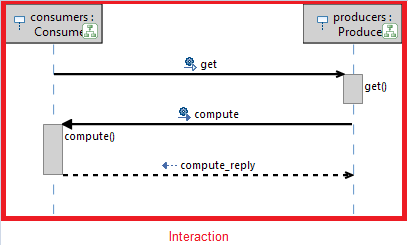In UML2, the interaction is represented by an element of type
Interaction.
The instance role and the lifeline represents one participant in the interaction.
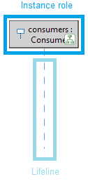In UML2, the instance role and the lifeline are represented by one element of type
Lifeline.
The execution typically represents a period in the participant’s lifetime when it is active. An execution is composed of three elements:
In UML2, the execution is represented by an element of type
Execution Specification, the execution start and finish are defined by an abstract type
Occurrence Specification.
The message represents a kind of communication between lifelines of an interaction. A message is composed by three elements:
In UML2, the message is represented by an element of type
Message Specification, the message send and receive are defined by one abstract type
Occurrence Specification.
Sirius internally manages a list of start/finish execution occurrences and sender/receiver message occurrences defined for each interaction. All these occurrences are event ends contained in the
EventEnds list.
An
eventEnd contains two properties:
semanticEvent: points to the semantic event which could be a message or an execution,
semanticEnd: points to one connection end of the semantic event, i.e. the semantic element which could be a message sender, a message receiver, an execution start or an execution finish.
There are two kinds of
EventEnds:
SingleEventEnd: Is an element which is used only as start/send or finish/receive by one execution/message. In UML2, an execution could be started or finished by an
Execution Occurrence Specification and a message could be sent or received by a
Message occurrence Specification.
CompoundEventEnd: Is an element that represents the combination of a message and an execution. This kind of
EventEnd exists in order to associate graphically a message to an execution. As the
CompoundEventEnd is an
EventEnd, it contains the two properties:
semanticEvent which points to a message or an execution.
semanticEnd which points to a
MixEnd element.
Depending on how the meta-model is defined, the
MixEnd could be represented by:
SingleEventEnd: This is the case in UML2, the
Execution Specification could be defined with a start/finish element of type
Execution Occurrence Specification or
Message Occurrence Specification
SingleEventEnds: one
SingleEventElement which points to the message and one
SingleEventElement which points to the execution.
The
Operation_0 message ends on the left border of the
Operation_0() execution because
Operation_0_receiver is associated to the start of the execution. Otherwise, the message would be associated to the lifeline. For example, the
Message_3 is a simple message not linked to an execution. Consequently, the
Message_3_receiver is a
SingleEventEnd and is attached to the lifeline.
Hence, for an asynchronous call, we get:
SingleEventEnd for the message sending:
Operation_0_sender
semanticEvent =
Operation_0 message
semanticEnd =
Operation_0_sender message occurrence specification
CompoundEventEnd for the
Operation_0 message receiving and
Operation_0 execution
startingEnd composed by one
SingleEventEnd =
Operation_receiver
semanticEvent =
Operation_0 message
semanticEnd =
Operation_0_receiver message occurrence specification
SingleEventEnd for the execution finish:
Operation_0_finish
semanticEvent =
Operation_0 execution
semanticEnd =
Operation_0_finish execution occurrence specification
In a Sirius sequence diagram, the elements are totally ordered.
Internally, Sirius maintains three ordered sets:
To provide a functional diagram, each semantic/graphical orderings couple must always be coherent. Creation tools and reordering tool must manage the semantic orderings. More explanations are given in the next section.
First, in an odesign file, from an existing viewpoint, you have to create a new kind of representation : Sequence Diagram Description.
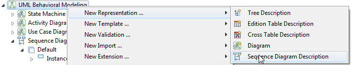 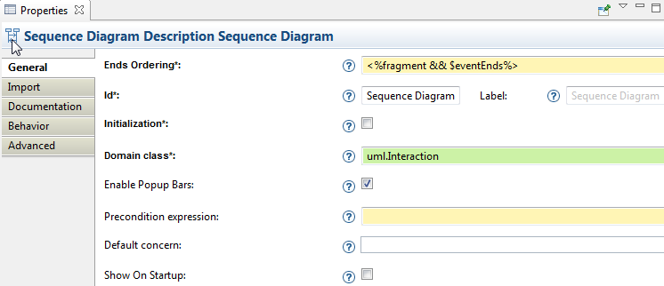As for other representations, you define mandatory properties:
For a complete description of each property, have a look at the Help > Sirius Specifier Guide > Reference Guide > Representation > Sequence Diagram.
The most important properties to understand are the Ends Ordering and Instance Roles Ordering.
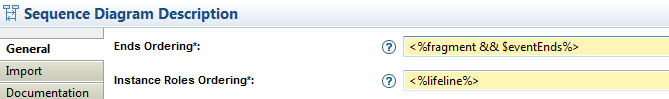In a sequence diagram, graphical elements are ordered chronologically and this order is essential. Maintaining and updating the elements global order will be the main purpose of all tools that you will create later. Your tools must keep all the time the order of semantic elements and according to this, Sirius manages the graphical representation order.
The ordered elements in a sequence diagram are defined with the Ends Ordering and Instance Roles Ordering fields. These properties will be used by Sirius to automatically order the graphical elements when you open a sequence diagram for an interaction.
The Ends Ordering handles the vertical order of events. It specifies with an expression how semantic elements must be ordered. These elements should be execution1 start/finish and message send/receive occurrences.
A specific variable exists for this expression:
eventEnds . The variable
eventEnds contains the list of all
EventEnds existing for the current interaction.
Pay attention: the evaluation of the
Ends Ordering expression should returned only elements contained in the
eventEnds list.
The Instance Roles Ordering handles the horizontal order of instance roles / lifelines. It specifies with an expression how semantic elements must be ordered. These elements should be the semantic elements which will be represented as instance role.
If we have a look at the UML2 meta-model, the fragment reference defined in an
Interaction contains all the execution occurrences and the message occurrences. Execution occurrences and messages occurrences are
EventEnd elements. But the fragment reference contains also some other types of elements as execution specifications. In order that the
Ends Ordering property only references
EventEnd elements we need to do an intersection of fragments elements and eventEnds (using either Acceleo or delegating to a Java service using
service:)..
Furthermore, the lifeline reference defined in an
Interaction contains all the
Lifeline representing both lifeline and instance role.
For the UML Modeler, the
Ends Ordering expression will return for the diagram below, the ordered list:
[Operation_0_sender, Operation_0_receiver, Operation_0_finish, test_sender, test_receiver, test_reply_sender, test_reply_receiver, Message_3_sender, Message_3 _receiver].
And the
Instance Roles Ordering expression will return for the diagram below, the ordered list:
[producers, consumers].
When the sequence diagram description is complete, you can add a Default layer.
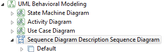Next step is to define the mappings and all the tools to manage the interaction elements.
We want to represent on a sequence diagram four different elements and then associate a mapping to each element:
Firstly, create the instance role mapping. It graphically corresponds to the box at the top of the lifeline.

Set the mandatory properties Id, Label and Domain class:

The Semantic Candidates Expression is an Acceleo expression returning the semantic elements for which the mapping will be evaluated and then a graphical element will represent the semantic element on the diagram.
Don’t forget to create a new Style for the instance role mapping.
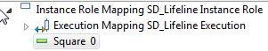Execution mappings are used when you have an element which is composed by a start, a duration and a finish element.
We will define the execution mappings:
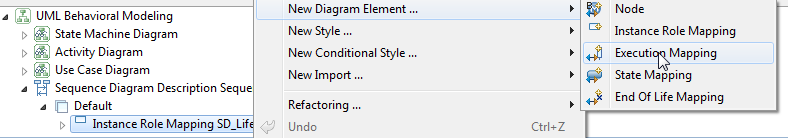First, create the execution mapping for the lifeline execution. This represents the dashed line of lifeline.
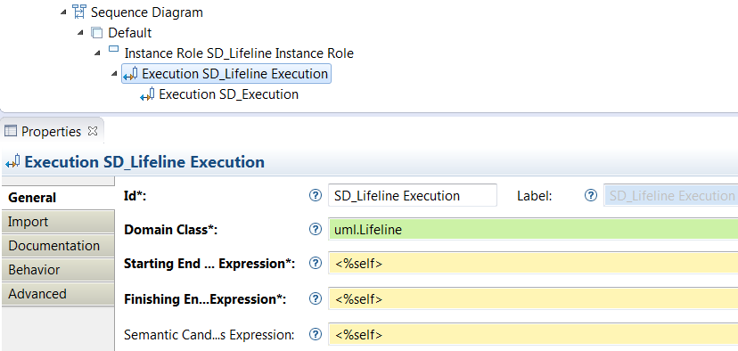And create the execution mapping for the execution. This represents the execution square on lifeline or other execution.
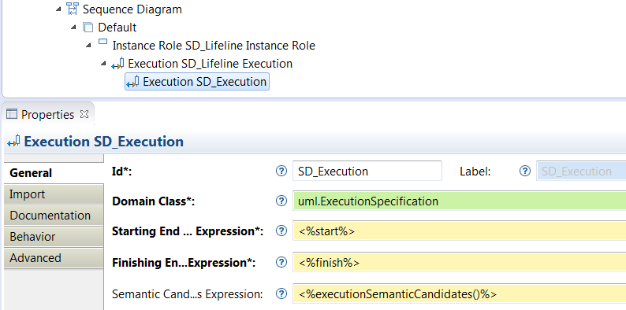Set the mandatory properties:
Here, a java service1 executionSemanticCandidates() is called.
The end finder expressions are used by Sirius to graphically link the execution to its start and finish elements and to find during creation and reorder operations where to reattach the dragged element.
As an execution could recursively contain other executions, don’t forget to import the mapping on itself by setting the property Reused bordered node mappings :
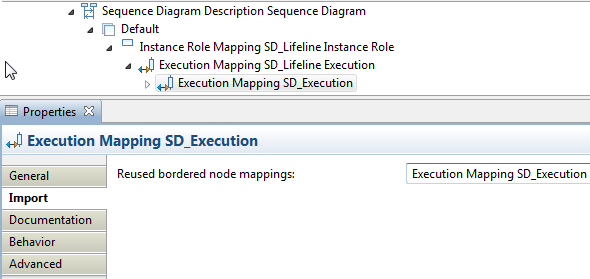For both execution mappings, don’t forget to create a New Style:
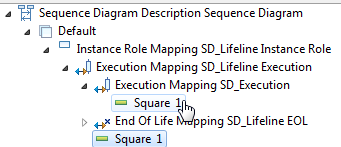Now, we will define the basic message mapping:
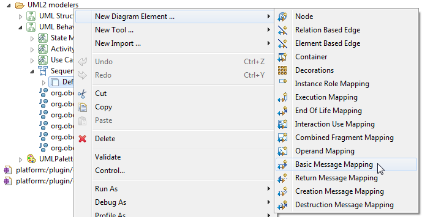Create the basic message mapping:
 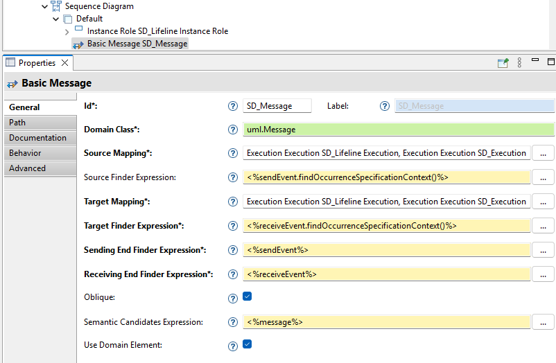
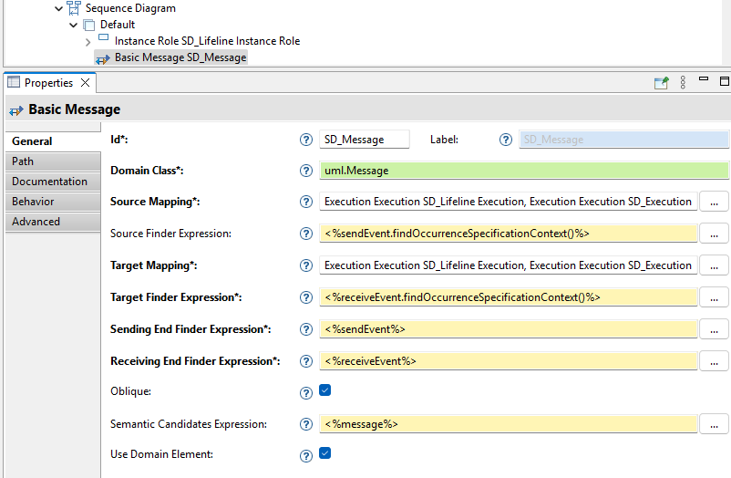
Set the mandatory properties:
Message, the message send event of type
Message Occurrence Specification and the message receive event of type
Message Occurrence Specification. Sirius will use this information to:
compute() execution can be selected as source for the get message. The producers lifeline and the get execution can be selected as target for the get message.
Standard node mappings, direct children of a layer of the current sequence diagram description, can be used to represent the unknown message end. Lost and found messages should be created using a generic tool.
To use a java service in an Acceleo expression, service must be define like this in odesign:
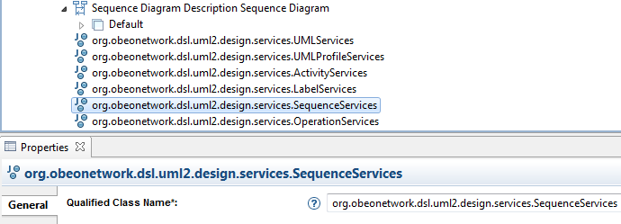Define a new Section to add creation tools:
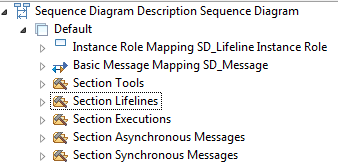Lifelines should be created using an Instance Role Creation Tool associated to the instance role mapping.
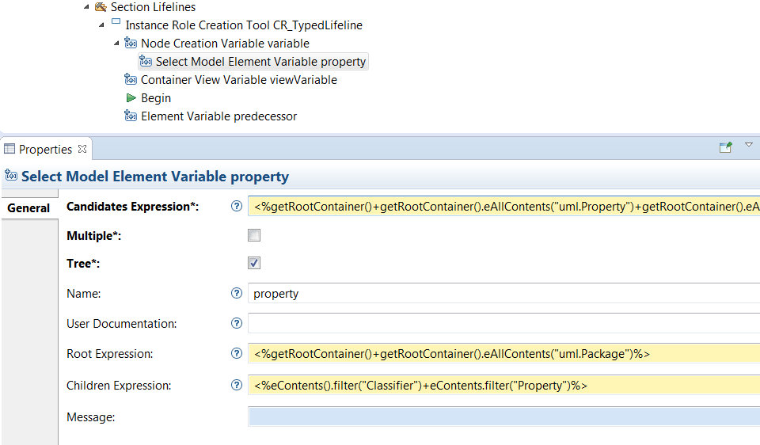The
predecessor variable represents in the global instance role ordering, the element preceding the new instance role.
An Execution can be created using Execution Creation Tool.
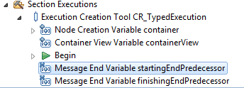The following variables can be used from inside the tool definition:
container: the element (lifeline or execution) that will contain graphically the new execution, in the example below the container would be the get() execution.
startingEndPredecessor and
finishingEndPredecessor: represent in the global event ends list, the element preceding the new execution start and the element preceding the new execution finish. To get the corresponding semantic end element associated to event end:
startingEndPredecessor.semanticEnd or
finishingEndPredecessor.semanticEnd.
In the example above, we want to create a new
BehaviorExecution_2 on the existing get execution. Thus, the
startingEndPredecessor and
finishingEndPredecessor will point to the
get_receiver message occurrence. This variables represent the semantic elements (
get_receiver) associated to the graphical element preceding the
startingEnd (
BehaviorExecution_2_start) and
finishingEnd (
BehaviorExecution_2_finish) of the new element.
A Message can be created using Message Creation Tool.
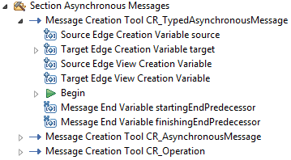The following variables can be used from inside the tool definition:
source: Semantic element associated to message send;
target: Semantic element associated to message receive;
startingEndPredecessor and
finishingEndPredecessor: represent in the global event ends list, the element preceding the new message send and the element preceding the new message receive.
In this example, we want to create a new
Message_1 from the existing compute execution to the producers lifeline. Thus, the
startingEndPredecessor and
finishingEndPredecessor will point to the
get_finish execution occurrence. These variables represent the semantic elements (
get_finish) associated to the graphical element preceding the
startingEnd (
Message_1_sender) and
finishingEnd (
Message_1_receiver) of the new element.
Precondition. As for many other tools, it is possible to define a precondition for message creation tools. Depending on the precondition expression, the tool allows the element creation only under certain conditions. The precondition is defined as an interpreted expression.
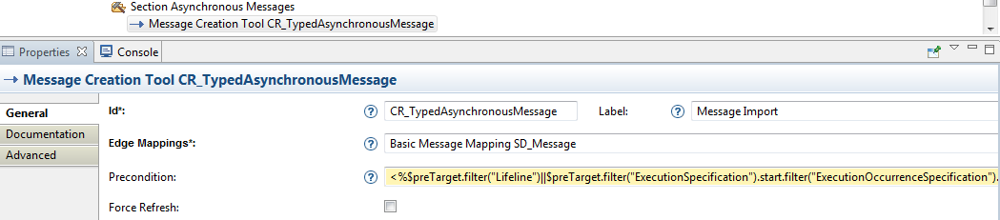A variable is available for the Acceleo expression : $preTarget. This variable is the semantic element associated to graphical element that is currently hovered by the mouse.
This tool is called when the user moves or changes the size of graphical elements on the diagram.
A single unique event reorder tool can and must be specified for message and execution mappings. The purpose of the tool is to re-synchronize the graphical ordering with the semantic ordering. When the user reorders a graphical element, the global order of graphical elements changes and the tool must then reorder the semantic elements according to these changes.
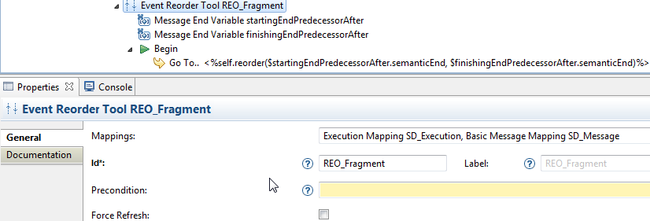This tool has access to the following two variables usable in expressions:
startingEndPredecessorAfter: represents in the global event end list the element preceding the moved element start/send. It is the event which,
after the move, will be directly
preceding the
starting end (top) of the moved element;
finishingEndPredecessorAfter: represents in the global event end list the element preceding the moved element finish/receive. It is the event which,
after the move, will be directly
preceding the
finishing end (bottom) of the moved element.

In this example, we want to move the get execution after the
Message_0. Thus, the
startingEndPredecessorAfter variable will point to the
compute_finish execution occurrence. This variable represents the semantic elements (
compute_finish) associated to the graphical element preceding the
startingEnd (
get_start) after the move of get execution. The
finishingEndPredecessorAfter variable will point to the
get_start execution occurrence. This variable represents the semantic elements (
get_start) associated to the graphical element preceding the
finishingEnd (
get_finish) after the move of get execution.
Now, we will have a look to a more complex reorder operation.
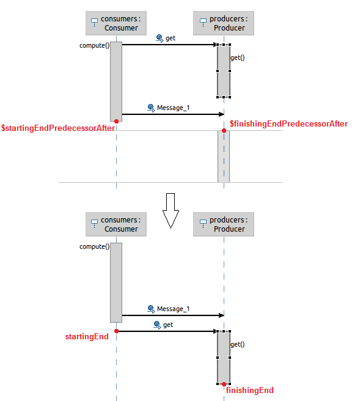In this example, we want to move the get execution after the
Message_1. The get execution is linked to the get synchronous message, thus the get execution
startingEnd is a
compoundEvent representing the
get_receiver message occurrence. When we move the execution, the associated message must be also moved. In this case, the
startingEndPredecessorAfter variable will point to the
compute_finish execution occurrence. This variable represents the semantic elements (
compute_finish) associated to the graphical element preceding the
startingEnd (
get_send) after the move of get execution. The
finishingEndPredecessorAfter variable will point to the
get_receiver message occurrence. This variable represents the semantic elements (
get_receiver) associated to the graphical element preceding the
finishingEnd (
get_finish) after the move of get execution.
This tool is called when the user horizontally moves an instance role on the diagram.
A single unique event reorder tool can and must be specified for instance role mappings. The purpose of the tool is to re-synchronize the graphical ordering with the semantic ordering. When the user reorders a graphical instance role, the global order of graphical instance roles changes and the tool must then reorder the semantic instance roles according to these changes.
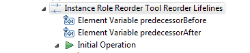This tool has access to the following two variables usable in expressions:
predecessorBefore: represents in the global instance role ordering the element previously preceding the moved instance role. It is the element which,
before the move, was directly
preceding the moved element;
predecessorAfter: represents in the global instance role ordering the element preceding the moved instance role. It is the event which,
after the move, will be directly
preceding the moved element;
In this example, we want to move the
consumers instance role after the
producers instance role. Thus, the
predecessorAfter variable will point to the
producers execution occurrence. This variable represents the semantic elements (
producers) associated to the graphical element preceding the
consumers instance role after its move. The
predecessorBefore variable will be null, because
consumers was the first element of the ordering.
Nothing specific for deletion tool, edit label tool, diagram creation and diagram navigation tool, have a look at the Sirius Specifier Guide.